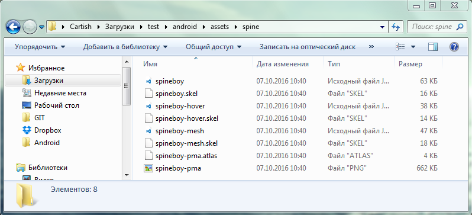
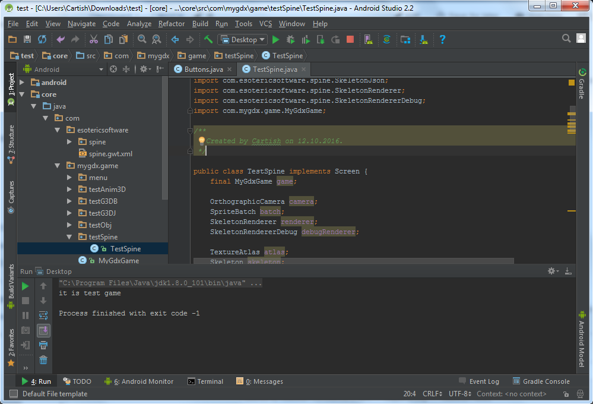
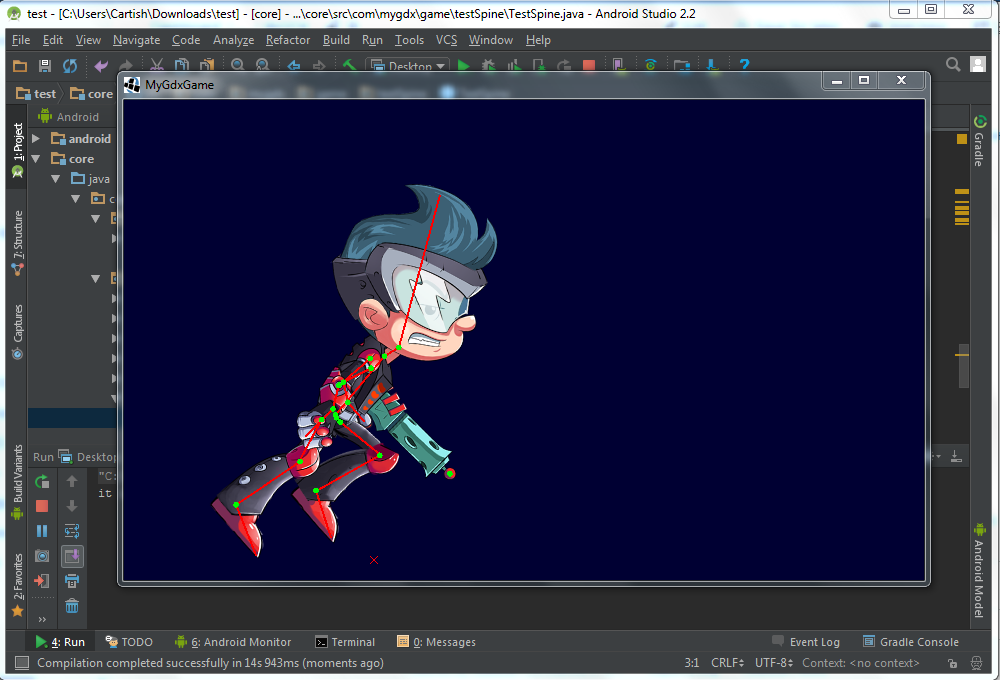

Данный пример был взят из официального репозитория пакета spine-libgdx https://github.com/EsotericSoftware/spine-runtimes/blob/master/spine-libgdx/spine-libgdx-tests/src/com/esotericsoftware/spine/SimpleTest1.java
1) Необходимо в проект добавить пакет spine-libgdx, если вы этого еще не сделали прочтите раздел 13. Добавление в проект пакета spine-libgdx
2) Получаем все необходимые файлы 2D Spine анимации и копируем их в папку assets

3) Создаём новую папку testSpine и новый класс TestSpine интерфейс которого Screen

4) Класс TestSpine в конструкторе создаёт камеру и загружает объект анимации.
Создаем переменную визуализации скелетной анимации и настраиваем её
SkeletonRenderer renderer;
renderer = new SkeletonRenderer();
renderer.setPremultipliedAlpha(true);// PMA приводит к правильному смешивания без очертаний.
Создаем переменную дебажной визуализации
SkeletonRendererDebug debugRenderer;
debugRenderer = new SkeletonRendererDebug();
debugRenderer.setBoundingBoxes(false);
debugRenderer.setRegionAttachments(false);
Загружаем атлас
atlas = new TextureAtlas(Gdx.files.internal("spine/spineboy-pma.atlas"));
Загружает данные JSON скелета и устанавливаем масштаб в 60 %
SkeletonJson json = new SkeletonJson(atlas);
json.setScale(0.6f);
Создаем переменную данных скелета из json файла
SkeletonData skeletonData = json.readSkeletonData(Gdx.files.internal("spine/spineboy.json"));
Создаем основной объект скелета
skeleton = new Skeleton(skeletonData);
skeleton.setPosition(250, 20);
Создаем анимацию, добавляем переключения между анимациями.
AnimationStateData stateData = new AnimationStateData(skeletonData);
stateData.setMix("run", "jump", 0.2f);
stateData.setMix("jump", "run", 0.2f);
Содержит состояние анимации для скелета (текущей анимации, времени и т.д.).
state = new AnimationState(stateData);
state.setTimeScale(0.5f);
Очередь анимации на дорожке 0.
state.setAnimation(0, "run", true);
state.addAnimation(0, "jump", false, 2); // Jump after 2 seconds.
state.addAnimation(0, "run", true, 0); // Run after the jump.
Визуализация
Устанавливаем время визуализации
state.update(Gdx.graphics.getDeltaTime());
Позы скелета с использованием текущей анимации. Устанавливает локальную SRT кости.
state.apply(skeleton);
Использует локальную SRT кости ", чтобы вычислить их мир SRT.
skeleton.updateWorldTransform();
Настройка камеры, SpriteBatch, и скелетона видео обработки Debug
camera.update();
batch.getProjectionMatrix().set(camera.combined);
debugRenderer.getShapeRenderer().setProjectionMatrix(camera.combined);
Отображение скелетного изображения
batch.begin();
renderer.draw(batch, skeleton);
batch.end();
Отображение отладочной (дебажной) линии
debugRenderer.draw(skeleton);
Полный код примера:
package com.mygdx.game.testSpine;
import com.badlogic.gdx.Gdx;
import com.badlogic.gdx.Screen;
import com.badlogic.gdx.graphics.GL20;
import com.badlogic.gdx.graphics.OrthographicCamera;
import com.badlogic.gdx.graphics.g2d.SpriteBatch;
import com.badlogic.gdx.graphics.g2d.TextureAtlas;
import com.esotericsoftware.spine.AnimationState;
import com.esotericsoftware.spine.AnimationStateData;
import com.esotericsoftware.spine.Skeleton;
import com.esotericsoftware.spine.SkeletonData;
import com.esotericsoftware.spine.SkeletonJson;
import com.esotericsoftware.spine.SkeletonRenderer;
import com.esotericsoftware.spine.SkeletonRendererDebug;
import com.mygdx.game.MyGdxGame;
/**
* Created by Cartish on 12.10.2016.
*/
public class TestSpine implements Screen {
final MyGdxGame game;
OrthographicCamera camera;
SpriteBatch batch;
SkeletonRenderer renderer;
SkeletonRendererDebug debugRenderer;
TextureAtlas atlas;
Skeleton skeleton;
AnimationState state;
public TestSpine(final MyGdxGame myGdxGame) {
game = myGdxGame;
camera = new OrthographicCamera();
batch = new SpriteBatch();
renderer = new SkeletonRenderer();
renderer.setPremultipliedAlpha(true);
debugRenderer = new SkeletonRendererDebug();
debugRenderer.setBoundingBoxes(false);
debugRenderer.setRegionAttachments(false);
atlas = new TextureAtlas(Gdx.files.internal("spine/spineboy-pma.atlas"));
SkeletonJson json = new SkeletonJson(atlas);
json.setScale(0.6f);
SkeletonData skeletonData = json.readSkeletonData(Gdx.files.internal("spine/spineboy.json"));
skeleton = new Skeleton(skeletonData);
skeleton.setPosition(250, 20);
AnimationStateData stateData = new AnimationStateData(skeletonData);
stateData.setMix("run", "jump", 0.2f);
stateData.setMix("jump", "run", 0.2f);
state = new AnimationState(stateData);
state.setTimeScale(0.5f);
state.setAnimation(0, "run", true);
state.addAnimation(0, "jump", false, 2); // Jump after 2 seconds.
state.addAnimation(0, "run", true, 0); // Run after the jump.
}
@Override
public void show() { }
@Override
public void render(float delta) {
state.update(Gdx.graphics.getDeltaTime());
Gdx.gl.glClear(GL20.GL_COLOR_BUFFER_BIT);
state.apply(skeleton);
skeleton.updateWorldTransform();
camera.update();
batch.getProjectionMatrix().set(camera.combined);
debugRenderer.getShapeRenderer().setProjectionMatrix(camera.combined);
batch.begin();
renderer.draw(batch, skeleton);
batch.end();
debugRenderer.draw(skeleton);
}
@Override
public void resize(int width, int height) {
camera.setToOrtho(false);
}
@Override
public void pause() { }
@Override
public void resume() { }
@Override
public void hide() { }
@Override
public void dispose() {
atlas.dispose();
}
}
Если всё было сделано правильно в результате вы увидите 2D Spine анимацию.

Created with the Personal Edition of HelpNDoc: Free iPhone documentation generator